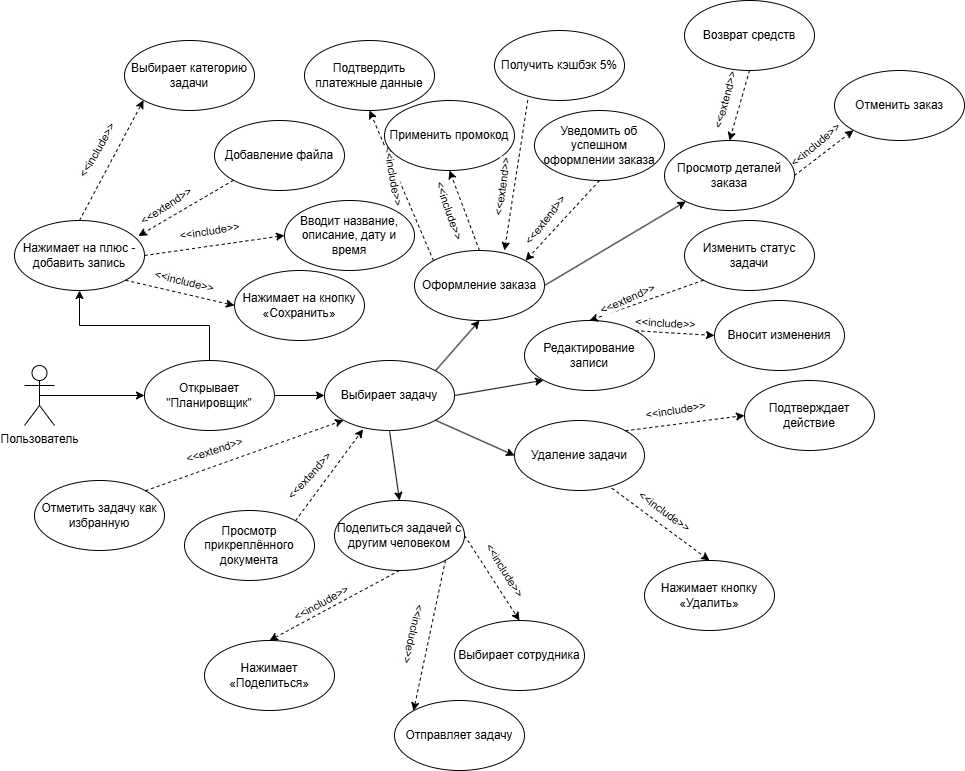
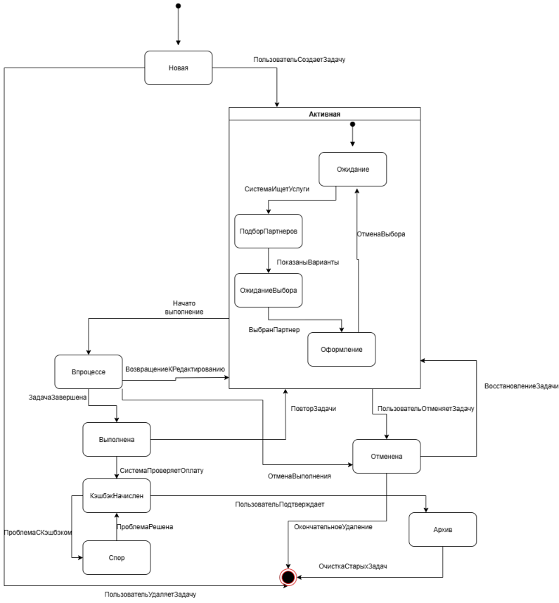
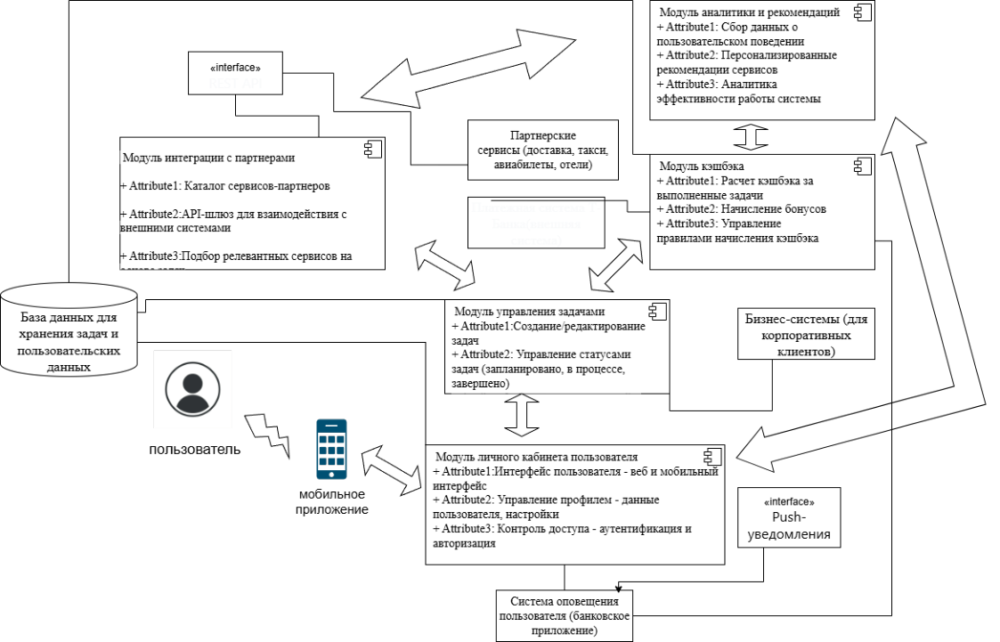
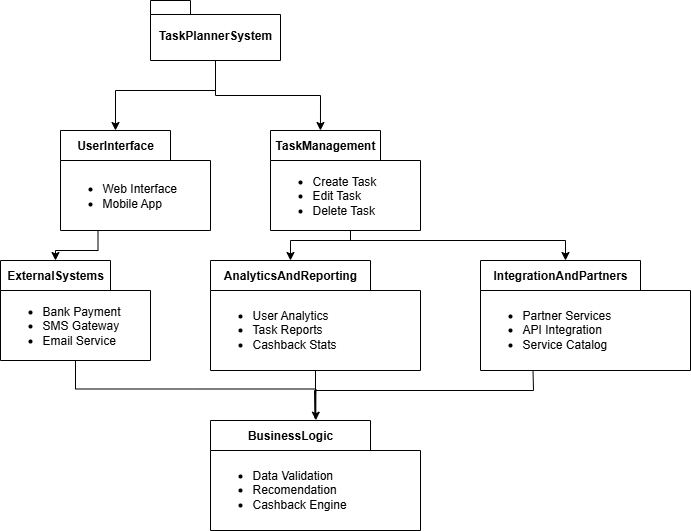
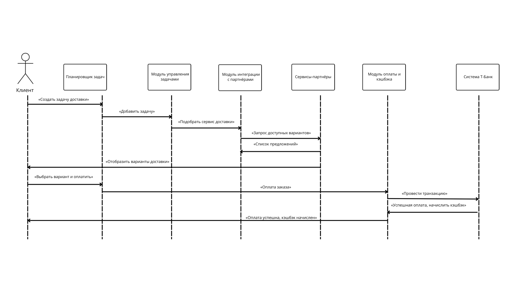
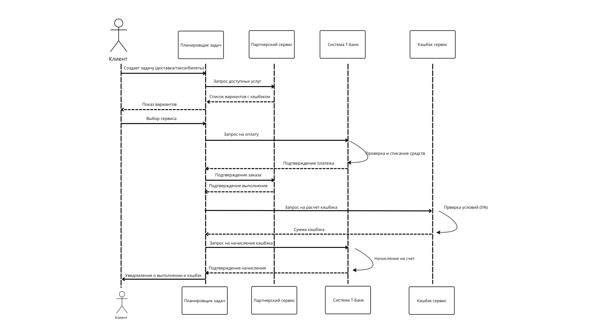
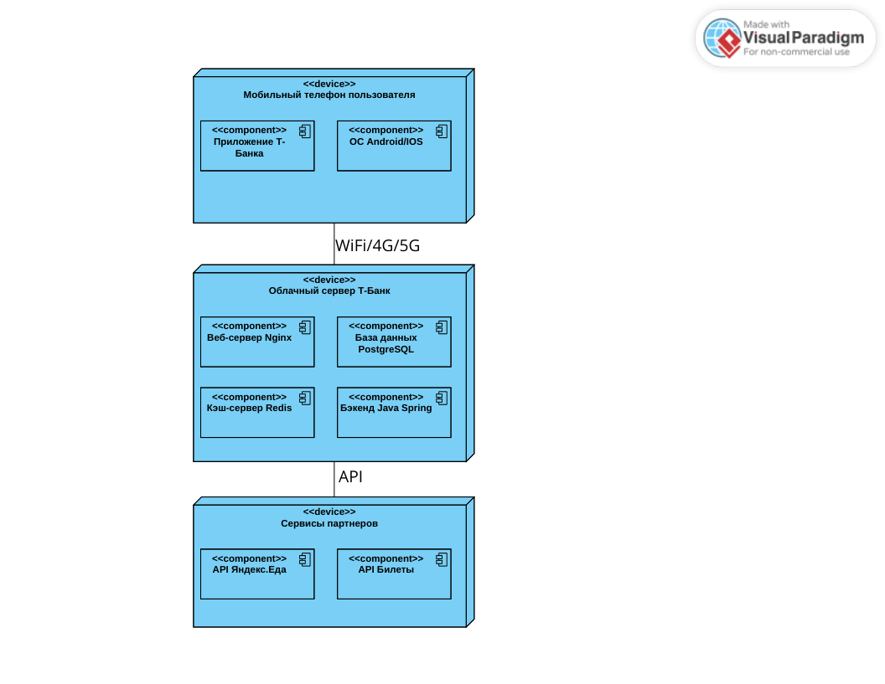
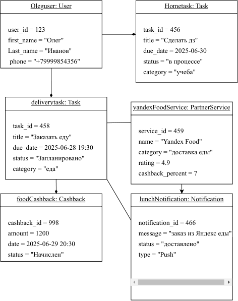
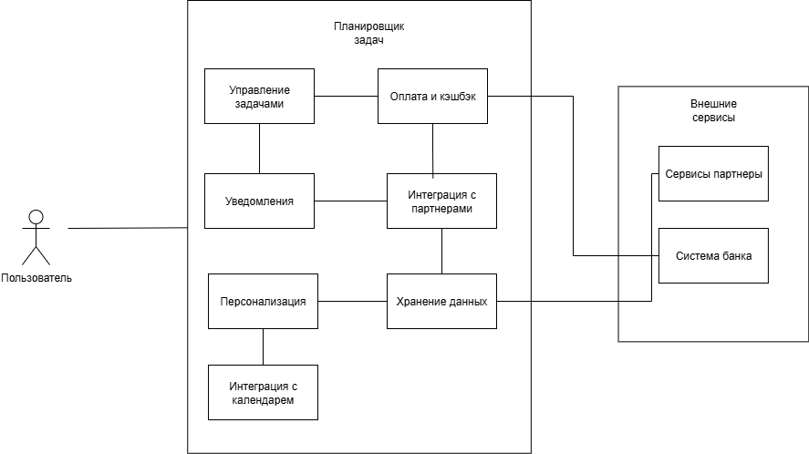

Полная информация о системе
Детальное описание модуля "Планировщик задач" для мобильного приложения Т-Банк
Планирование
Тема
Разработка модуля "Планировщик задач" в мобильном приложении Т-Банка с интеграцией партнерских сервисов и системой кэшбэка. Решение автоматизирует повседневные задачи пользователя и помогает выполнять их через экосистему банка.
Цели
- Повышение удобства и вовлеченности пользователей за счет персонального сценария планирования
- Увеличение эффективности использования продуктов компании
- Персонализированные рекомендации за счет автоматизации и подбора партнерских сервисов
- Рост транзакций и вовлеченности в экосистему банка
Задачи
- Создание интуитивного интерфейса для управления задачами
- Интеграция с API сервисов-партнеров (доставка, такси, билеты, отели)
- Разработка автоматического подбора релевантных сервисов под задачу
- Реализация кэшбэка до 5% за выполнение задач/заказы
- Безопасность и защита пользовательских данных
Целевая аудитория
SWOT-анализ
Сильные стороны
- Интеграция в экосистему банка
- Большая база лояльных пользователей
- Уникальное торговое предложение: планирование + подбор услуг + кэшбэк
Слабые стороны
- Высокая зависимость от качества и стабильности партнеров
- Риск нерелевантных рекомендаций, если алгоритм подбора работает плохо
Возможности
- Расширение аудитории через полезный повседневный инструмент
- Привлечение молодых пользователей (студенты и молодые специалисты)
Угрозы
- Жесткая конкуренция на рынке (планировщики, агрегаторы услуг)
- Репутационные риски при сбоях партнеров
4P анализ
Продукт
Ядро: умный планировщик задач в приложении банка, который не только напоминает, но и предлагает партнерские сервисы для выполнения задач.
- Создание и управление задачами (напоминания, дедлайны)
- Автоподбор партнеров (доставка, такси, авиабилеты, отели) под задачу
Цена
Модель: цель не прямая платность, а рост транзакций и вовлеченности в экосистему банка.
Доход:
- Комиссия от партнеров за привлеченных клиентов
- Рост оборотов по картам через стимулы и кэшбэк
- Снижение оттока: сервис “вшит” в повседневность
Ценность: экономия денег (кэшбэк), времени (автоматизация), удобство (все в одном приложении).
Место
Канал: встроено в мобильное приложение Т-Банка.
- Ничего не нужно скачивать отдельно
- Работа во всех регионах присутствия банка с локализацией предложений партнеров
Продвижение
Внутри приложения:
- Пуш-уведомления “Новый планировщик с кэшбэком до 5%”
- Баннеры/рекомендации на главном экране
- Email/SMS информирование
Внешнее: реклама в соцсетях (VK, Telegram) на аудиторию, похожую на клиентов банка.
UML-диаграммы для планирования, требования и сценарии
Use-case диаграмма показывает участников (пользователь/партнерские сервисы/банк) и сценарии: создание задачи, получение рекомендаций, оформление заказа, начисление кэшбэка.
Диаграмма состояний фиксирует жизненный цикл задачи (Новая → В процессе → Выполнена/Отменена) и условия переходов. Это помогает не допустить “сломанных” сценариев.
Диаграмма деятельности описывает поток действий пользователя: постановка задачи → подбор сервиса → подтверждение → выполнение → начисление кэшбэка.

Разработка
Технологический стек и модули
Технологический стек:
- Frontend: React Native
- Backend: Java Spring
- База данных: PostgreSQL 14+
- Архитектура: микросервисная
- API: REST
Основные модули:
- Управление задачами
- Интеграция с партнерами
- Кэшбэк
- Уведомления
- Администрирование
UML-диаграммы для разработки
Диаграмма классов показывает сущности, их поля и методы, а также связи между объектами.

Диаграмма компонентов отражает состав модулей и их взаимодействие: UI → сервис задач → сервис партнеров → сервис кэшбэка → нотификации.
Диаграмма пакетов группирует код по подсистемам и помогает удерживать структуру проекта аккуратной (а не как обычно бывает).
План-график разработки и внедрения
Тестирование
Сценарии проверки
- Авторизация на главной → проверка корректности ввода
- Переход на страницу info → проверка отображения всех разделов
- Переход в архив → открытие/скачивание файлов
- Выход из аккаунта → проверка ограничения доступа к защищенным страницам
Результаты
- Ручное тестирование: навигация и логика входа работают, критических сбоев не выявлено.
- Консоль: после проверки ошибок не выявлено.
- Performance: главная страница легкая, info/archive тяжелее из-за медиа и файлов, но работают стабильно.
- Lighthouse: страницы получили высокие оценки по ключевым метрикам.
Отзывы пользователей
Вывод: прототип работает, но надо улучшить UX (контраст/размеры) и добавить базовую валидацию (email/пароль) + понятное поведение после входа.
UML-диаграммы для тестирования
Диаграмма последовательностей помогает проверять корректность обмена сообщениями: пользователь → система → партнер → начисление кэшбэка.
Временная диаграмма полезна для тестов дедлайнов/напоминаний и задержек уведомлений (время реакции системы).
Реализация + статистика
Текущее состояние
Сайт-витрина уже реализован: страницы оформлены, логика авторизации и навигации работает, материалы (диаграммы/архив) подключены. Сам продукт (модуль внутри приложения банка) требует полной разработки backend/мобильной части и интеграций.
Network
Примечание: сильнее всего “раздувает” страницу медиа (изображения диаграмм). Если включено кеширование, повторная загрузка заметно быстрее.
UML-диаграммы для реализации
Диаграмма развертывания показывает, где живут компоненты: клиент, backend, база данных, внешние партнерские API.
Диаграмма объектов помогает отразить пример “снимка” данных (конкретный пользователь, задача, начисление кэшбэка).
Диаграмма композитной структуры визуализирует внутреннюю структуру сложных компонентов и их “внутренности”.
Внедрение
План внедрения
- Этап 1 (1–2 месяца): MVP и пилот партнеров
- Этап 2 (2–3 месяца): расширение функциональности и интеграций
- Этап 3 (3–4 месяца): масштабирование и продвижение
- Этап 4 (постоянно): поддержка и оптимизация
Пилотное внедрение:
- Тестирование на фокус-группе 100–200 пользователей
- Интеграция с 2–3 ключевыми партнерами
- Сбор обратной связи и доработка